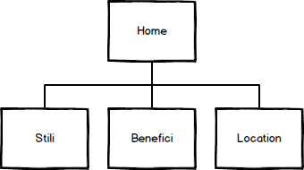
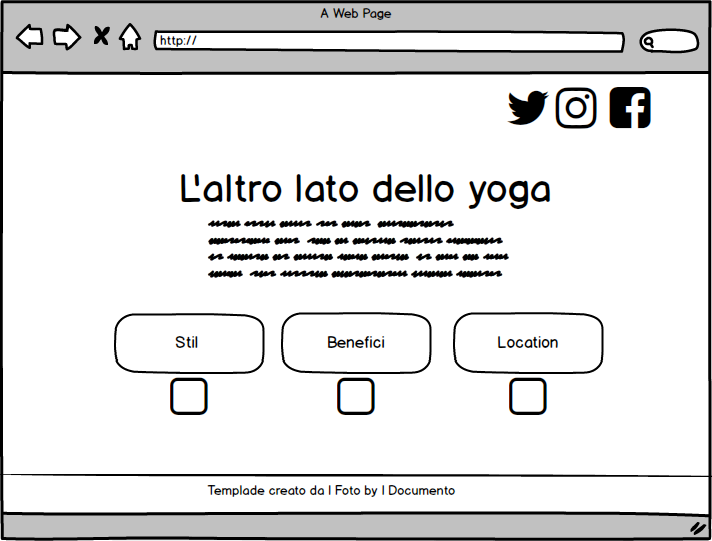
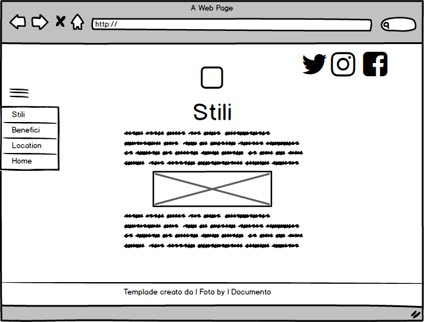
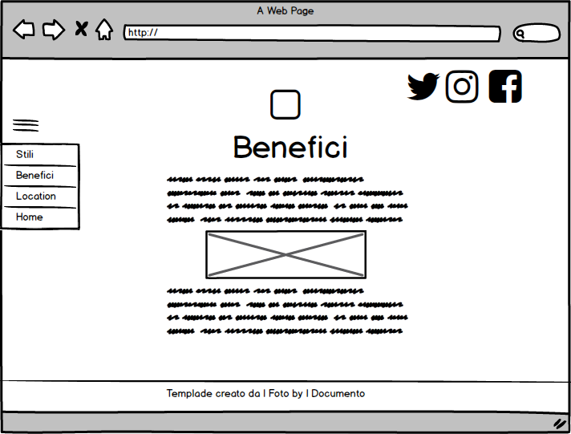
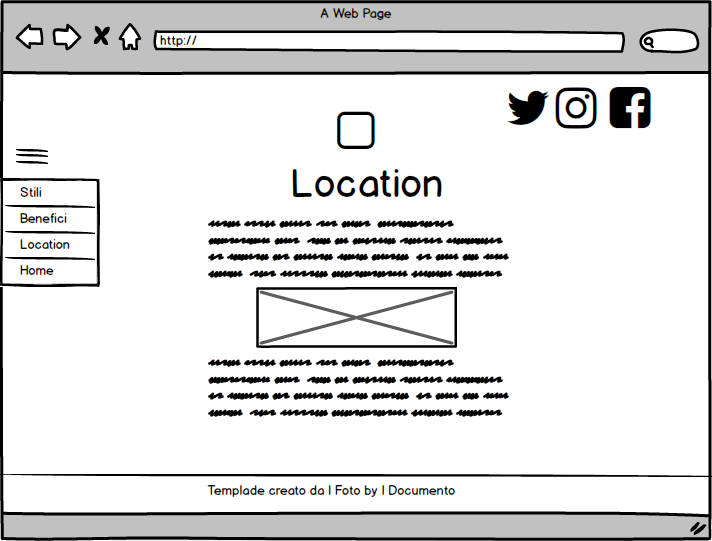
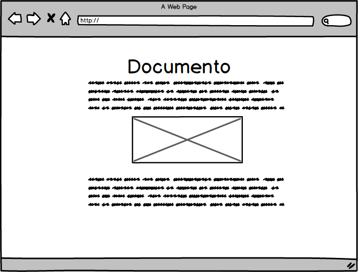

Attraverso la realizzazione di questo sito web abbiamo voluto lanciare un approccio più semplificato alla disciplina dello yoga, per farla conoscere ai principianti, a chi vuole provare qualcosa di nuovo e vuole usufruire, anche, della comodità di stare a casa, e per chi vuole verificare l’interesse per poi approfondirlo attraverso altre risorse. Il sito è realizzato in modo semplice e chiaro, basato sull’oggettività in modo tale da permettere all’utente di trovare le informazioni principali attraverso semplici link.
1.1 Obbiettivi: Il sito si concentra sulla disciplina dello yoga nella sua forma più semplice, con l’obiettivo di coinvolgere ed agevolare gli utenti ad approcciarsi a questa pratica orientale, più dal punto di vista fisico che mentale, in quanto in quasi nessun sito si tratta dello yoga per il semplice atto fisico.
1.2 Target Utente: Il target utente a cui ci riferiamo è principalmente femminile, con un’età che varia in base al tipo di yoga.
1.3 Competitors: Il primo competitor trovato è questo: https://www.lifegate.it/persone/stile-di-vita/storia-dello-yoga. In questo sito, si parla dello yoga in maniera molto approfondita e con termini e parole difficili da comprendere per un utente che non abbia un minimo di base. Inoltre è troppo lungo e lo sguardo dell’utente viene catturato dalle numerose pubblicità, non inerenti con lo yoga, facendo fatica a concentrarsi sull’articolo vero e proprio. Il secondo competitor è: https://www.yogaitalia.org. Il sito è ben realizzato ma troppo dispersivo. Per un’utente che non è pratico della disciplina, la home risulta difficile da leggere, perché piena di articoli vari, che riguardano la yoga, ma per avere informazioni base, ci si deve addentrare nel sito, cercare tra i vari link e collegamenti, perdendo così l’interesse. Il terzo competitor è https://www.atuttoyoga.it. Questo sito è ben realizzato, ma è rivolto ad un target utente con esperienza pregressa e che ha già dimestichezza con il mondo dello yoga; infatti la home si apre su esercizi di livello già avanzato.
2.1 Architettura del Sito: Alla home del sito sono collegate altre tre pagine ed ognuna di esse tratta un elemento dello yoga, che l’utente può scegliere di leggere.
2.2 Wireframe: Il nostro sito web si compone di una pagina Home strutturata con il titolo, formato in parte da un’immagine, in grande, in alto e al centro. Sotto si ha una breve descrizione dell'argomento di cui si va a trattare. Inseguito troviamo tre bottoni allineati orizzontalmente, con sotto le proprie icone rappresentative. Ognuno dei bottoni poi, è collegato ad un’altra pagina web che si delinea sempre con il titolo in grande, in alto, al centro con sopra la propria icona. Sotto al titolo troviamo il testo e le immagini. A lato, in alto, a sinistra c'è il menù a sandwich che si apre e permette di cambiare pagina e tornare alla home.
    2.3 Look and Feel: Per il titolo abbiamo utilizzato il font “Viga”, mentre per il corpo e per i bottoni “Roboto”. Lo sfondo del sito è sui colori caldi del giallo, arancio e ocra.
3.1 Linguaggi: I linguaggi web utilizzati per la realizzazione del sito web sono HTML5 e CSS3. Il templade è stato creato interamente da noi.
3.2 Strumenti: A supporto della progettazione web abbiamo utilizzato SublimeText2 come text editor, FontAwesome per le icone, Colorhunt per la palette dei colori, Googlefont per i font. Per la realizzazione del wireframe abbiamo usato Balsamiq. Per il controllo delle visualizzazioni ci siamo servite di Google Analytics, mentre per la pubblicazione abbiamo utilizzato Github e la condivisione attraverso widget social. Per la ricerca dei competiors ci siamo avvalse della ricerca Google in Similarweb
Il sito è realizzato nella sua accezione più semplice per permettere all’utente una navigazione diretta e facile da capire, con contenuti chiari e precisi. Le varie pagine lo guidano nella lettura e nella ricerca delle informazioni che gli possono maggiormente interessare. Da questo punto di vista risulta efficace per un utente che cerca le sue prime informazioni sulla disciplina, senza il bisogno di conoscenze pregresse, ma può risultare scarno e mancante di contenuto per chi già è informato sulla materia orientale e vuole approfondire. Riprendendo i competitors analizzati sopra, questi si concentrano in termini di comunicazione web su aspetti più approfonditi, utilizzando linguaggi specifici e puntando sempre sul beneficio mentale lasciando sullo sfondo quello fisico.
Per questo progetto si è scelto di puntare sulla semplicità per sensibilizzare e diffondere la conoscenza della disciplina dello yoga ad utenti che non la conoscono, ma che sono incuriositi ad approcciarvisi, e dimostrare che è funzionale anche per chi non ha la possibilità di frequentare corsi.
Il sito si rivolge ad un pubblico ampio, con un’età compresa tra i 25 e 60 anni; essendo una disciplina per sia per mente e spirito che per corpo, il target può variare e comprendere tutte le persone, uomini e donne, che per vari motivi decidono di provare lo yoga, per ritagliarsi uno spazio nella giornata per sé stessi. Questo tipo di target viene raggiunto molto spesso tramite social ed eventi con manifestazioni e prove gratuite, per far si che le persone una volta provato si incuriosiscano e cerchino poi informazioni aggiuntive. Inoltre per raggiungere gli utenti, il sito deve essere accogliente, con colori caldi, che invitino a rimanere sulla pagina. Nel sito si spiega agli utenti che la disciplina è approcciabile a tutti, uomini compresi, che spesso a causa di informazione sbagliate vengono esclusi ed emarginati. Il sito si impegna a dare informazioni base ad ogni utente che capiti sul sito riguardo l’argomento dello yoga per aiutarlo ad orientarsi e facendo così scoprire all’utente se la disciplina in questione possa essere di suo interesse. Il target audience troverà quindi informazioni semplici, chiare e precise. In questo modo potrà approcciarsi alla disciplina, informarsi e approfondire l’argomento, coinvolgendo anche amici, tramite il passaparola.
Intendiamo promuovere il sito web attraverso i social network e i post sia su blog che trattano di argomenti correlati come alcune pratiche orientali, sia su blog che trattano di ginnastica e salute. Inoltre il collegamento diretto con la pagina Facebook permette di rimanere aggiornati su novità, incontri, benefici e fornisce consigli utili da provare.
L’obiettivo principale era sensibilizzare e diffondere la conoscenza della disciplina, e attraverso la promozione sui social network siamo riusciti nel nostro intento. Il target audience si è allargato, facendo cogliere il messaggio non solo alle donne di età compresa tra i 25 e 60 anni, ma ha coinvolto anche uomini, e ragazze più giovani. Questo lo possiamo vedere dal raggiungimento del numero di “Like” su uno dei Social Network più diffuso come Facebook e dal numero di visite sul sito tramite Google Analytics.